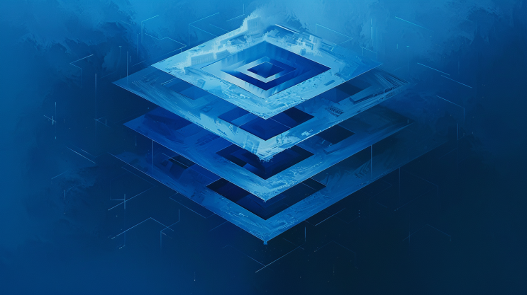

WORDPRESS DESIGN AND DEVELOPMENT
At Virtual Tech Solutions NI, we offer specialized WordPress services to create dynamic and engaging websites. Our expertise in WordPress development ensures that your website is both visually appealing and highly functional. Our services include:
- Custom WordPress Development: Build unique, tailor-made WordPress themes and plugins to meet your specific business needs.
- Responsive Design: Design and develop WordPress websites that are fully responsive and provide an optimal viewing experience on all devices.
- E-commerce Integration: Implement powerful e-commerce solutions using WooCommerce for seamless online shopping experiences.
- Theme Customization: Customize existing WordPress themes to align with your brand identity and requirements.
- Plugin Development and Integration: Develop custom plugins and integrate third-party plugins to extend the functionality of your WordPress site.
- SEO Optimization: Optimize your WordPress website for search engines to improve visibility and drive organic traffic.
- Content Management: Efficiently manage and update your website content with an intuitive and user-friendly interface.
- Performance Optimization: Enhance website performance with speed optimization, caching, and other best practices.
- Security Enhancements: Implement robust security measures to protect your WordPress site from vulnerabilities and attacks.
- Migration Services: Seamlessly migrate your website to WordPress from other platforms without data loss or downtime.
- Ongoing Maintenance and Support: Provide regular updates, backups, and technical support to ensure your WordPress site runs smoothly.
- Training and Consultation: Offer training sessions and consultations to help you manage and maintain your WordPress website effectively.
Partner with Virtual Tech Solutions NI for expert WordPress services that deliver stunning and high-performing websites.